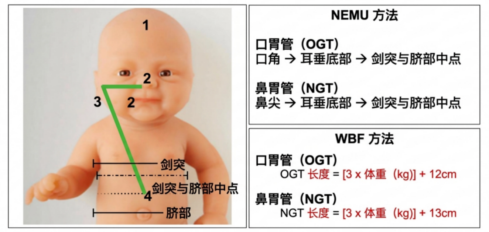

鼻胃管 NGT
—
请输入体重
外露长度（总长 62 cm）—
口胃管 OGT
—
请输入体重
外露长度（总长 62 cm）—
输入 5.5 kg 及以下的新生儿体重时，将按文档中的体重区间对照表给出建议整数深度。

胃管置入长度测量方法示意图（NEMU／WBF）。
文档公式：NGT = 3 × 体重(kg) + 13 cm；OGT = 3 × 体重(kg) + 12 cm。
仅作计算辅助与教学参考，不能替代临床评估、科室规范和置管后位置确认。请由具备资质的医护人员按本机构流程操作。